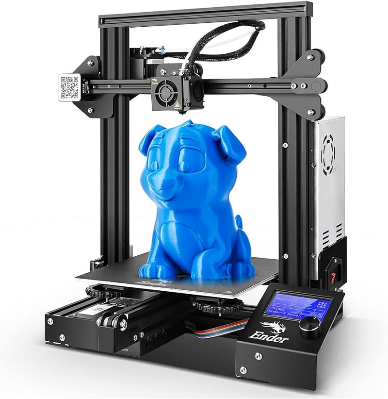

Proyectos Recientes
Sistema de inventario
Este proyecto consiste en el desarrollo de un Sistema de Inventario para una farmacia. Su objetivo es optimizar la gestión del stock, los movimientos de productos y la generación de reportes en tiempo real, asegurando un control eficiente y preciso de los inventarios.
El sistema cuenta con los siguientes módulos:
- Registro y categorización de productos: Permite organizar los productos en categorías específicas, facilitando su búsqueda y actualización.
- Control de entradas y salidas de inventario: Monitorea en tiempo real las adquisiciones y ventas de productos, manteniendo actualizada la información del stock.
- Generación automática de reportes: Proporciona informes detallados sobre el estado del inventario, ayudando en la toma de decisiones.
- Alertas de bajo inventario: Notifica cuando los niveles de stock están por debajo del umbral mínimo, evitando desabastecimientos.
- Integración con lectores de código de barras: Facilita la entrada y salida de productos mediante escaneo, agilizando el proceso y reduciendo errores.

Impresora 3D
Se realizó la construcción de una impresora 3D casera. El proceso incluyo:
- Montaje del marco: El chasis de la impresora se construyo utilizando materiales de reciclaje.
- Instalación del sistema de movimiento: Se configuran los ejes de movimiento (X, Y, Z) que permiten el desplazamiento preciso del cabezal de impresión.
- Integración del extrusor: Se instala el extrusor, que funde y deposita el material de impresión.
- Configuración de la cama de impresión: La plataforma sobre la que se imprime el objeto se calibra para asegurar una adhesión adecuada y una impresión precisa.
- Conexión del sistema electrónico: Se incorporan los componentes electrónicos, como el controlador, motores paso a paso y sensores, que coordinan el funcionamiento de la impresora.
- Pruebas y calibración: Se realizan pruebas para ajustar los parámetros de impresión, como la temperatura del extrusor y la velocidad de movimiento, para lograr la mejor calidad de impresión.

Diseño de página Web
Este proyecto consiste en el desarrollo de una página web diseñada para ofrecer una experiencia de usuario intuitiva y atractiva.
El proyecto incluye:
- Diseño responsivo: La página se adapta a diferentes dispositivos y tamaños de pantalla, garantizando una experiencia óptima en móviles, tabletas y computadoras de escritorio.
- Interfaz de usuario intuitiva: Se ha diseñado una navegación clara y fácil de usar, con un diseño visualmente atractivo que mejora la accesibilidad y la interacción del usuario.
- Contenido dinámico: Integración de elementos interactivos y multimedia, como formularios, galerías de imágenes y videos, para enriquecer la experiencia del usuario.
El objetivo es crear una página web efectiva y visualmente atractiva que cumpla con las necesidades del cliente y ofrezca una experiencia satisfactoria a los usuarios.